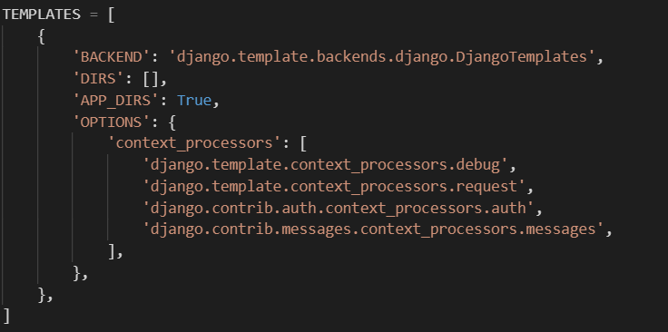

Django-5 模板template
创建模板
首先,在 myProject/myApp 目录里创建一个 templates 目录。Django 将会在这个目录里查找模板文件。
在 myProject/myProject/settings.py 文件中的 TEMPLATES 配置项描述了 Django 如何载入和渲染模板。默认的设置文件设置了 DjangoTemplates 后端，并设置 APP_DIRS = True。这一选项将会让 DjangoTemplates 在每个 INSTALLED_APPS 文件夹中寻找 templates 子目录。

新建模板文件 myApp/templates/myApp/detail.html，并向其中写入如下代码：
1 | <!--myApp/templates/myApp/detail.html--> |
模板统一使用点符号 . 来访问变量的属性。在示例 {{ book.name }} 中，首先 Django 尝试对 book 对象使用字典查找（也就是使用 obj.get(str) 操作），如果失败了就尝试属性查找（也就是 obj.str 操作），结果是成功了。如果这一操作也失败的话，将会尝试列表查找（也就是 obj[int] 操作）。
在 {% for ... in ... %} 循环中发生的函数调用：book_list.all 被解释为 Python 代码 book_list.objects.all()，将会返回一个可迭代的 Book 对象，这一对象可以在 {% for ... in ... %} 标签内部使用。
创建视图
现在我们要创建视图来返回图书列表：
1 | # myApp/views.py |
在此视图函数 detail 中，首先将数据库的 Book 列表按照 pub_date 时间来排序，存储到变量 book_list 中。
“载入模板，填充上下文，再返回由它生成的 HttpResponse 对象”是一个非常常用的操作流程。于是 Django 提供了一个快捷函数 render()。
render() 函数把 request 对象作为它的第一个参数，模板作为第二个参数，字典作为它的可选的第三个参数。它返回给定模板呈现的给定文本的一个 HttpResponse 对象。
在这里，context 信息将会返回到模板 myApp/detail.html。
绑定链接
将新视图添加进 myProject.urls 模块里：
不过这里把刚才自己添加的index删掉了
1 | # myProject/urls.py |
运行
1 | python3 manage.py runserver 0:8080 |
页面显示了书的列表,就说明成功了